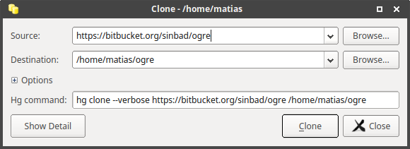
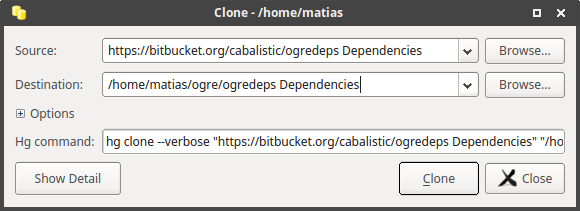
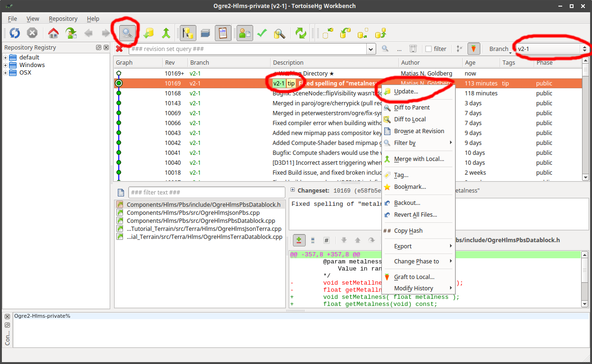
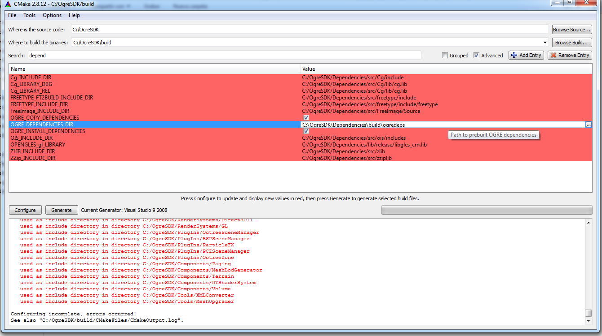

Requirements
- CMake 3.x
- Mercurial. We recommend TortoiseHg
- What you do NOT need: Boost. Don't waste your time.
- Visual Studio 2008 SP1 - 2015 (2017RC not tested). MinGW may work but we strongly recommend Visual Studio.
- DirectX June 2010 SDK. Optional. Needed if you use older Visual Studio versions and want the D3D11 plugin. Also comes with useful tools.
- Windows 10 SDK. Contains the latest DirectX SDK, thus recommended over the DX June 2010 SDK, but you may still want to install the June 2010 SDK for those tools.
- Windows 7 or higher is highly recommended. For Windows Vista & 7, you need to have the KB2670838 update installed. YOUR END USERS NEED THIS UPDATE AS WELL.
- For HW & SW requirements, please visit http://www.ogre3d.org/developers/requirements
Downloading Ogre
Most dependencies are conveniently stored in its own repository called "ogredeps" for you to download.
IMPORTANT: Do NOT use the the "Download" feature from Bitbucket. It will not follow subrepositories.
Command line:
mkdir Ogre
hg clone https://bitbucket.org/sinbad/ogre -r v2-1
cd Ogre
hg clone https://bitbucket.org/cabalistic/ogredeps Dependencies
Graphical
Clone Ogre:

Now clone the ogredeps repository:

Make sure Ogre is in the 2.1 branch:

Note: If the branch filter doesn't appear, hit Ctrl+S
Building Dependencies
- Open CMake GUI.
- Point "Where is the source code" to C:\OgreSDK\Dependencies; and "Where to build the binaries" pointing to "C:\\OgreSDK\\Dependencies\\build"
- Click 'Configure' and select the generator (i.e. if you're using Visual Studio 2013, select Visual Studio 12)
- Answer 'Ok' when asked if you want to create the build directory
- Sometimes on bleeding edge repos there might be CMake syntax warnings. Ignore them.
- Now click 'Generate'.
- Open C:\OgreSDK\Dependencies\build\OGREDEPS.sln under Visual Studio. If you have multiple versions of VS, make sure you open it with the one you targeted for in CMake.
- Build the whole solution; which should build FreeImage, freetype, OIS, zlib and zziplib. Make sure to build both Debug and Release
- Once it's finished, right click on INSTALL project, and click build. THIS IS VERY IMPORTANT. It will create the folder structure that Ogre needs. You need to do this both for Debug and Release.
- This should've created an SDK folder structure under C:\OgreSDK\Dependencies\build\ogredeps
Building Ogre
- Open CMake GUI.
- Point "Where is the source code" to C:\OgreSDK\; and "Where to build the binaries" pointing to "C:\\OgreSDK\\build"
- Hit Configure and choose the same Visual Studio generator you did for the dependencies. It will now complain it can't find the Dependencies.
- Set OGRE_DEPENDENCIES_DIR to point to C:\OgreSDK\Dependencies\build\ogredeps as in the picture. Use the search filter to find the option quickly. Now hit configure again.

- Pro tip: If C:\OgreSDK\Dependencies contains the files that are generated in C:\OgreSDK\Dependencies\build\ogredeps; you won't need the previous step.
- Click Generate. If you want to build the samples, now tick OGRE_BUILD_SAMPLES2 and click Generate again.
- Open the solution C:\OgreSDK\build\OGRE.sln and compile.
- You're done. You can also right click on INSTALL project if you wish to generate the SDK structure we provide in our official releases (we are planning on modifying this on the future for Ogre 2.1 though).
- If you are like me (I don't like using INSTALL feature for my own projects), you can add C:\OgreSDK\build\include to your project's include location and C:\OgreSDK\build\lib\Debug (and Release) to your additional library paths. The DLLs will be located in bin\debug (or release)
You can watch the YouTube video if you prefer video tutorials.
Note: If necessary, ensure OGRE_CONFIG_THREAD_PROVIDER is set to none and that OGRE_CONFIG_THREADS is unchecked. Don't worry, those CMake configs are about the old threading model. For more information see the Wiki's FAQ I'm confused about threading support in Ogre 2.1


 1.8.14
1.8.14